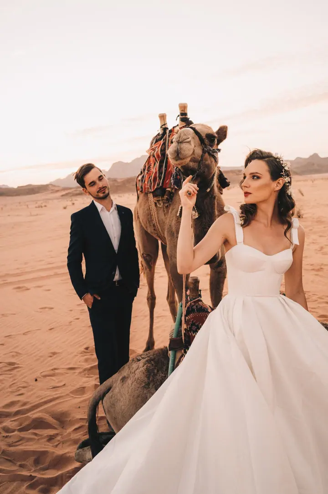
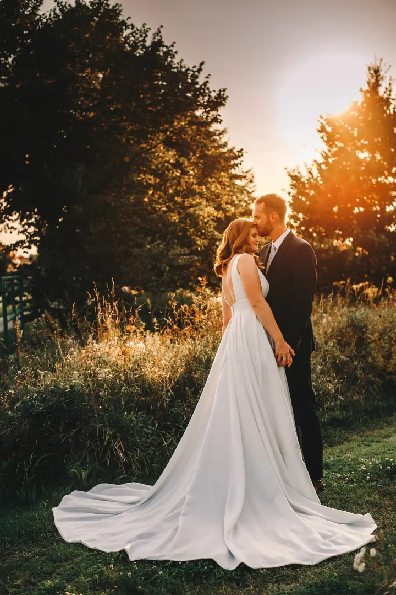
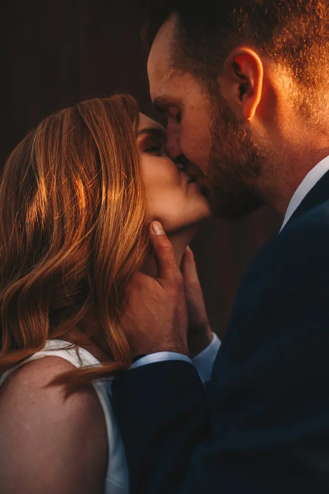
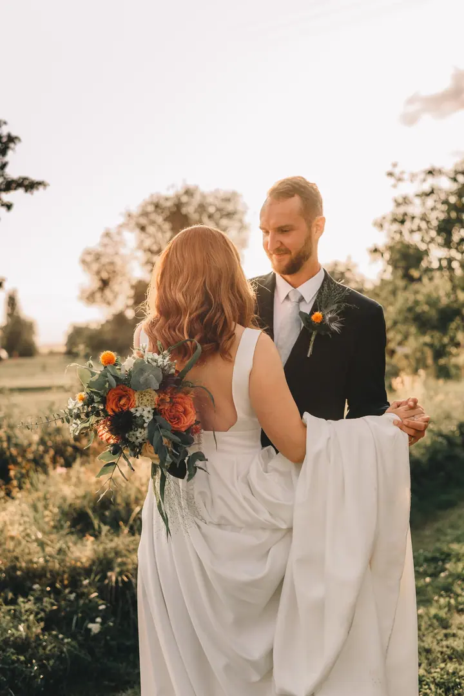

jedna
Svatby
Fotím menší svatby na 4 hodiny i celý den od ranních příprav po první tanec a večerní oslavu. Chci, aby z fotek zůstala cítit atmosféra vašeho dne i po letech.

Svatební a rodinná fotografka · Plzeňský kraj, Úterý, Plzeň

Jmenuji se Lucie Koutská a pod značkou Luci PHOTO fotím svatby, rodiny a ženy z Plzeňského kraje. V malém městečku Úterý nedaleko Plzně mám svůj ateliér, ale stejně ráda s vámi vyrazím do okolní malebné přírody.
Více o mně
Co fotím
jedna
Fotím menší svatby na 4 hodiny i celý den od ranních příprav po první tanec a večerní oslavu. Chci, aby z fotek zůstala cítit atmosféra vašeho dne i po letech.
První krůčky, dětský smích nebo obyčejné rodinné objetí. Fotím váš příběh takový, jaký opravdu je, v ateliéru nebo venku v přírodě.
Těhotenské bříško je jedno z období, které rychle uteče. Vyfotím ho jemně a přirozeně, v ateliéru v Úterý nebo venku.
Kolik času si doopravdy dáváte jen sama sobě? Portréty pro ženy ve své křehkosti i síle, kde si můžete dovolit zpomalit.
Fotka, která bude mít duši.

Za objektivem
Svatby fotografuji už více než 11 let a pořád je pro mě velkou ctí být u jednoho z nejdůležitějších dnů v životě dvou lidí. Každá svatba je jiná a mým cílem je zachytit ji tak, aby z fotek zůstala cítit její atmosféra i po letech.
V Úterý nedaleko Plzně mám ateliér. Sem i na focení do okolní přírody za mnou jezdí klienti z různých koutů republiky, a toho si nesmírně vážím. Fotím rodiny, děti, těhotenství, páry i ženy, které si chtějí dopřát chvíli jen pro sebe.
Fotografování je pro mě mnohem víc než práce, je to moje vášeň a způsob, jak žiju svůj sen. Krásu často hledám v detailech a v pocitech, které v nich bývají schované. Při focení vás nenápadně vedu, abyste se cítili uvolněně a celé to společně užili.
Lucie
Napište mi, co plánujete. Když si nejste jistí rozsahem nebo balíčkem, ráda vám poradím a společně vybereme, co bude pro vás důležité.
Termín je závazně rezervovaný po uhrazení rezervačního poplatku. Pak už je ten den jen váš.
Pomůžu vám s výběrem oblečení, doporučím místo i čas focení. Během fotografování vás nenápadně vedu, abyste se cítili přirozeně.
Hotové fotografie dostanete v online galerii, ze které si můžete objednat i kvalitní tisk.
Portfolio
Otázky
Pro rok 2027 nabízím dva balíčky: 4 hodiny focení s 200+ fotografiemi za 15.500 Kč a celý den (10 hodin) se 400 až 700 fotografiemi za 24.500 Kč.
Doprava na svatbu v Plzni a okolí do 50 km je v ceně. Pro vzdálenější místa vám připravím individuální kalkulaci.
Focení trvá zhruba hodinu, v ateliéru v Úterý nebo venku v přírodě. V ceně 3.800 Kč je 10 upravených fotografií v elektronické podobě podle vašeho výběru z náhledů.
Ano, z náhledů si můžete vybrat kolik chcete. Každá další upravená fotografie stojí 200 Kč.
Napište pár vět o tom, co si představujete. · +420 608 326 029